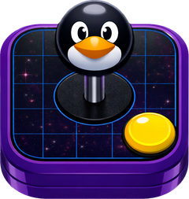

OpenEmuxSua coleção retrô,
pronta para jogar.
Adicione os jogos que você tem. O OpenEmux organiza tudo por console, com capas, no Linux, no Windows e no Android.
O que há de novo nesta versão ↓ ▶ Assistir ao vídeo (44 s)
Livre e de código aberto · Licença MIT · AppImage, .deb, .rpm & Flatpak no Linux · instalador & ZIP portátil no Windows · APK no Android (GPLv3)
Inspirado no OpenEmu para macOS, mas não é um fork: o código é outro, separado, com o RetroArch cuidando da emulação. Saiba mais.
Biblioteca grande que continua rápida, e seus jogos antes dos downloads.
O OpenEmux 1.23.4 é sobre velocidade, no desktop e no Android, e sobre os momentos em que o app deixava você no escuro.
- Biblioteca grande, rápida. Com 3000 jogos, “Todos” abre em menos de um segundo em vez de três, e o app usa quase metade da memória.
- Seus jogos antes dos downloads. Escolha a pasta de ROMs e a biblioteca já abre; o emulador de cada console baixa na primeira vez que você joga. Ao abrir um jogo aparece “Iniciando…”, e no fim, quanto tempo você jogou.
- Jogados recentemente, detalhes do jogo e modo TV. Continue de onde parou, veja core, shader, saves e tempo de jogo num lugar só, e jogue do sofá com F11 ou o botão Guide.
- Android menor, mais rápido, e pausa pelo controle. O APK ficou menor e abre em cerca de metade do tempo, e segurar Start no controle abre o menu de pausa.
- Escolha a pasta de ROMs.
- Os jogos aparecem na hora.
- Jogue, e o emulador baixa.
Versões anteriores
- 1.23.3 Escolha o formato de cada botão na tela do Android, com triângulos arredondados e cara de apertado.
- 1.23 Modo âncora e botões combo nos controles na tela do Android: jogos que pedem dois botões ao mesmo tempo agora dão para jogar no vidro.
- 1.22 Trocar e editar a skin pelo menu de pausa, saves com a imagem inteira, e continuar jogando enquanto um jogo chega.
Cada console, em cartuchos.
Cada console tem uma página com os jogos nos próprios cartuchos. Troque para capas ou lista quando quiser.
Os jogos mostrados são fictícios e meramente ilustrativos. Não são jogos reais desses consoles, e suas artes foram criadas com IA.
Um controle para cada console.
No Android, cada console tem o próprio controle na tela, em retrato e em paisagem. Conecte um gamepad e ele sai da frente.
Os jogos mostrados são fictícios e meramente ilustrativos. Não são jogos reais desses consoles, e suas artes foram criadas com IA.
Android 8 ou mais novo, 64 bits (arm64). O app Android é um fork do RetroArch, por isso tem licença GPLv3; o código-fonte está em openemux-android.
Cada jogo no cartucho do seu console
Na visão de cartucho, os jogos que você adicionou aparecem com a arte do rótulo no cartucho do console deles. Os cartuchos abaixo são um exemplo dessa visão.
Instalação
Há pacotes para Debian, Ubuntu e Fedora, um AppImage, um Flatpak, um instalador para Windows e um APK para Android. Na primeira abertura o OpenEmux configura o resto.
Linux
Isolado e com atualização automática
Instale o RetroArch pelo Flathub:
flatpak install -y flathub org.libretro.RetroArchAdicione o repositório do OpenEmux e instale o OpenEmux:
flatpak remote-add --if-not-exists --no-gpg-verify \ openemux https://guilhermefeitosa66.github.io/openemux-flatpak/repo flatpak install -y openemux io.github.guilhermefeitosa66.OpenEmuxAs atualizações chegam com
flatpak update.
Prefere instalar o pacote baixado? Depois do passo 1, rode:
flatpak install -y ./OpenEmux-*.flatpakQualquer distro
Baixe pelo botão acima.
Torne o arquivo executável e abra:
chmod +x OpenEmux-*-x86_64.AppImage ./OpenEmux-*-x86_64.AppImageSem FUSE? Coloque
APPIMAGE_EXTRACT_AND_RUN=1na frente do comando.
Debian / Ubuntu
Ubuntu 24.04 LTS ou mais recente.
Baixe pelo botão acima.
Instale a partir da pasta onde ele foi salvo:
sudo apt install ./openemux_*_amd64.deb
Fedora
Fedora 40 ou mais recente.
Baixe pelo botão acima.
Instale a partir da pasta onde ele foi salvo:
sudo dnf install ./openemux-*.x86_64.rpm
Windows Beta
As duas versões já trazem o GTK 4, o runtime do Python e o próprio RetroArch, então não há nada para instalar junto. Windows 10 ou 11, 64 bits. É novidade — se algo não funcionar direito, abra uma issue.
O jeito de sempre
Baixe pelo botão acima.
Abra o
OpenEmux-*-setup.exee siga o instalador.Instala só para o seu usuário, então não pede permissão de administrador. As versões ainda não são assinadas digitalmente: o SmartScreen vai avisar, e Mais informações → Executar assim mesmo resolve.
Nada para instalar
Baixe pelo botão acima.
Descompacte onde quiser e rode o
OpenEmux.exeda pastaOpenEmux\que vem dentro. Configurações, biblioteca, saves e capas ficam na pastadata\dela e nada vai para o seu perfil de usuário, então funciona direto de um pendrive. Se a pasta mudar de letra de unidade ou de lugar, tudo continua lá.
Android
O APK ainda não está na Play Store: baixe nas Releases e permita que o navegador ou o gerenciador de arquivos instale apps quando o Android pedir. Android 8 ou mais novo, 64 bits.
Instale o APK
Baixe pelo botão acima.
Abra o arquivo baixado e confirme. As atualizações se instalam do mesmo jeito, por cima da versão anterior.
Deixe baixar os cores
Na primeira vez que abre, o app baixa os cores dos emuladores. Depois coloque suas ROMs em Importar, ou em Android/data/com.openemux.mobile/files/roms no celular.
Verifique o seu download
Toda release vem com um arquivo SHA256SUMS. Coloque-o ao lado do arquivo que você baixou e rode:
sha256sum -c SHA256SUMS --ignore-missingOK significa que o arquivo é exatamente o que foi publicado. Qualquer outra coisa significa que ele está corrompido ou foi adulterado — não execute.
No Windows, o PowerShell mostra o hash e você compara a olho com a linha correspondente no SHA256SUMS:
Get-FileHash .\OpenEmux-*-setup.exe -Algorithm SHA256Todos os arquivos na página de Releases →
Prefere compilar você mesmo? make bootstrap && make run — veja as instruções de compilação.
Todo o resto
Feito sobre o RetroArch
Por baixo, quem emula é o RetroArch. Ele é poderoso, mas os menus e as configurações dele podem assustar quem só quer jogar. O OpenEmux cuida do que fica em volta: organizar seus jogos, baixar os cores e configurar controles e shaders.
Seus jogos, por console
Os jogos que você adiciona ficam agrupados por console, com capas baixadas do acervo de miniaturas do libretro.
Pronto na primeira abertura
Na primeira vez que abre, o OpenEmux cria a configuração e baixa os cores que os seus consoles usam, normalmente em uns dez segundos. O restante continua baixando em segundo plano.
Controles por console
Configure teclado e controle de cada console num painel só. O OpenEmux repassa tudo ao RetroArch quando o jogo começa.
Shaders por console
Escolha um shader de CRT ou de scanlines para cada console numa lista curta, sem passar pelo menu de shaders do RetroArch.
Lista de BIOS
Mostra quais arquivos de BIOS cada console precisa e quais você já tem, para um arquivo faltando não virar um jogo que simplesmente não abre.
Linux em primeiro lugar
O Linux é a plataforma principal do OpenEmux. O app é feito com GTK4 e Adwaita, segue as diretrizes do GNOME, e toda mudança é testada primeiro no Linux. O Windows também é suportado, com uma versão ainda em beta.
Uma skin para cada console
Cada um dos 31 consoles tem o seu controle na tela, no desenho do controle original, em retrato e na horizontal. Uma faixa embaixo da imagem salva, carrega, liga o turbo e acelera o jogo.
Cartuchos e capas
Os jogos aparecem como cartuchos com seus rótulos, ou como capas e em lista. As estantes ficam na ordem que você quiser.
Pronto depois de um download
O app não traz os cores: na primeira vez que abre, baixa do buildbot do RetroArch os de todos os consoles, junto com os arquivos de sistema que o PSP e o GameCube usam.
Com gamepad também
Conecte um controle e a skin da tela sai da frente: o jogo ocupa a tela toda, e os menus seguem o direcional e os botões.
Claro e escuro
Segue o tema do celular, ou escolha um nos Ajustes.
Oito idiomas
Os mesmos idiomas do app de desktop, seguindo o celular ou escolhidos nos Ajustes.
RetroAchievements
Entre uma vez nos Ajustes e cada jogo desbloqueia conquistas no seu perfil do RetroAchievements, com modo hardcore quando você quiser.
Jogue os jogos que você tem
O OpenEmux é um frontend para o RetroArch, feito para que quem só quer jogar não precise aprender os menus do RetroArch antes. Ele não é uma fonte de jogos: não traz jogos, nem ROMs, nem arquivos de BIOS, e nunca vai trazer.
- Use só conteúdo que você possui legalmente. Faça o dump dos seus próprios cartuchos e discos, ou use backups de jogos que você comprou.
- Pirataria não é o propósito. Baixar jogos protegidos por direitos autorais que você não tem é ilegal na maioria dos países.
- A emulação ajuda a preservar a história. Muito da arte, da música e do design dos games vive em hardware que está envelhecendo. Manter isso jogável vale a pena, e funciona melhor quando respeita quem fez esses jogos.
31 sistemas
Cada sistema roda com os cores do próprio RetroArch, e tem no OpenEmux as suas capas, controles e configurações de shader.
Inspirado no OpenEmu, movido pelo RetroArch
O OpenEmux é inspirado no OpenEmu, o frontend de emuladores para macOS. Como o OpenEmu só roda no macOS, o OpenEmux tenta oferecer algo parecido no Linux, e agora no Windows também. Ele não é um fork e não compartilha código com o OpenEmu: é um projeto separado, escrito em Python, GTK 4 e libadwaita, e a emulação em si vem dos projetos RetroArch e libretro. Os ícones dos consoles são arte do OpenEmu, creditados sob a licença BSD do OpenEmu. O app para Android é um design independente (não existe OpenEmu para celular). O OpenEmux não é afiliado ao OpenEmu Team nem endossado por ele. Nada disso existiria sem o trabalho de todos esses projetos. ❤️
O OpenEmux é software livre
É gratuito, e o código é aberto sob a licença MIT. Se quiser ajudar, relatos de bugs, traduções, código e ideias são sempre bem-vindos. No r/OpenEmux você pode pedir ajuda, mostrar seu setup ou acompanhar o que está sendo feito.